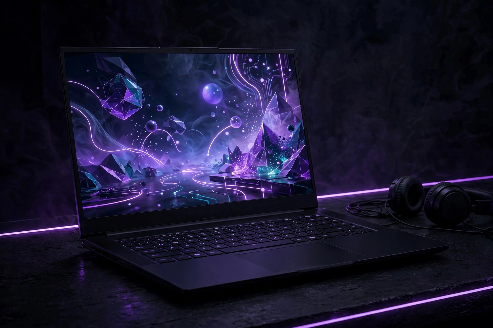
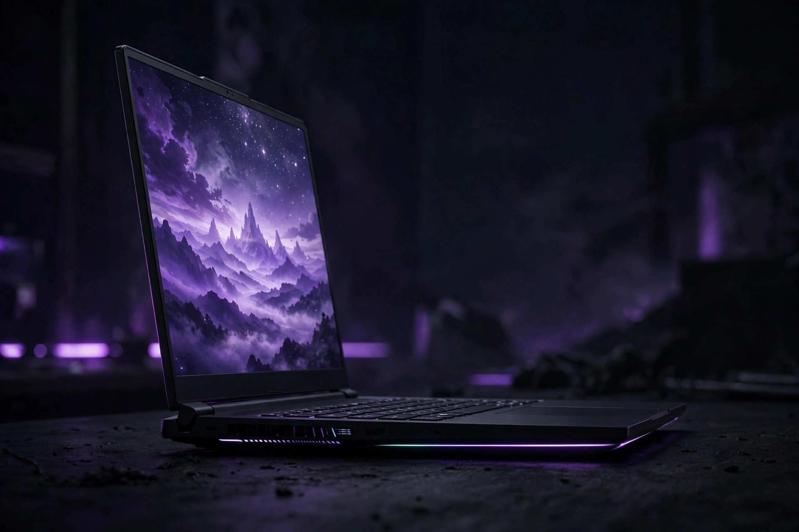

What to look for in a budget gaming laptop in Canada

A gaming laptop is the one budget purchase where the box can mislead you without lying. Two laptops can carry the same graphics badge, the same screen size and a similar price, and still be noticeably different machines once a game loads — because the details that decide performance hide in the full specification, not the headline. This guide follows the same approach as the rest of this series: the criteria first, in the order they matter, then a verification procedure for checking the exact configuration before any money changes hands. Canadian pricing makes that discipline doubly important, because most video guides quote US prices that do not map cleanly onto what a Canadian retailer charges.
Start with the graphics chip, then verify its power limit
Every credible buying guide puts the graphics processor first in the budget order — ahead of the processor, the memory and the display — and that ordering is sound. The graphics chip decides which games run well and at what settings, and unlike some other parts, it cannot be replaced later. Memory and storage can sometimes be added; the graphics chip you buy is the graphics chip you keep for the life of the machine. So the first filter is simple: in the current budget tier, look for a recent dedicated graphics chip rather than integrated graphics, and treat anything a generation or two old with suspicion unless the price genuinely reflects its age.
Here is the check almost no roundup teaches. A laptop graphics chip is configured by each manufacturer to run at a set power limit, and that limit varies widely between models using the exact same chip name. The GeForce RTX 4050 Laptop GPU, a common budget choice, carries 6GB of video memory — but its configurable power range spans from low-power thin designs to much higher limits in larger chassis. A low-power version in a slim laptop and a high-power version in a chunkier one share a badge, not a performance level. Before shortlisting any model, find its graphics power figure — usually labelled TGP or total graphics power — on the manufacturer's specification page for that exact model. If a listing will not tell you, that silence is information: move to a model whose maker publishes it.
What the Canadian budget tiers actually contain
Canadian tier tables from Best Buy Canada give a useful reality check on what money buys here, in Canadian dollars. Use them as expectations to test listings against, not as promises — individual configurations vary inside every tier.
| Tier (CAD) | Graphics | Processor | Memory | Storage | Display |
|---|---|---|---|---|---|
| Entry, under $1,000 | RTX 3050 class | Core i5 or Ryzen 5 | 8–16GB | Varies | Varies |
| Budget, under $1,500 | RTX 4050 or RTX 5050 class | Core i5/i7 or Ryzen 5/7 | 8–16GB | 512GB–1TB NVMe SSD | 15–16 inch, 1080p, 60–144Hz |
| Mid, $1,500–$2,000 | RTX 3060 to 4060 class | Higher-tier processors | 16GB | Varies | 1080p or higher |
Two lessons fall out of the table. First, the jump from the entry tier to the under-$1,500 tier is where the modern baseline lives — current buying guidance for 2026 purchases points to RTX 4050-class graphics or better, paired with a fast-refresh 1080p screen. Second, an older configuration can sit on a shelf priced like a current one. A Canadian roundup recently flagged exactly that pattern: a previous-generation build listed at a price that only made sense against much newer hardware. The defence is boring and effective — always price the exact configuration in front of you against a current-generation machine before deciding it is a deal.
Processor, memory and storage: the supporting cast
With the graphics chip settled, the processor matters mainly as a partner: the budget tiers pair their graphics with mid-range Intel Core i5 or i7, or AMD Ryzen 5 or 7, processors, and that class is the sensible match. Chasing a top processor paired with an entry graphics chip inverts the priority order and spends money where games notice it least.
Memory is the spec most worth reading twice. Guidance aimed at gaming laptops recommends 16GB or above, yet budget configurations still ship with 8GB in some listings — the tier tables show 8–16GB for a reason. A machine that starts at 8GB is not automatically a bad buy, but only if its memory can be upgraded, which is a verification question covered below. Where a maker offers a choice, memory arranged in two channels is the preferred arrangement in manufacturer guidance, so a single-stick configuration is worth a question at checkout.
Storage follows the same pattern. Budget machines commonly carry a 512GB to 1TB NVMe solid-state drive, and modern games are large enough that a small drive fills after only a couple of installs — one Canadian roundup advises budgeting for a storage upgrade for exactly that reason. A 512GB drive with an empty second slot can be a better long-term buy than a larger drive in a sealed design. As with memory, the headline number matters less than whether you can change it later.

The display: refresh first, brightness and colour second
The budget tier's typical screen is a 15- or 16-inch 1080p panel running at 60 to 144Hz, and for gaming the refresh rate is the figure to weight first — it decides how smooth motion can look, provided the graphics chip can feed it frames. A higher-resolution screen sounds like an upgrade, but at this budget it usually steals money from the graphics chip and then asks that chip to work harder per frame. Buy the resolution the graphics can drive well.
Brightness and colour coverage are the display specs listings love to omit. They decide whether the screen stays readable in a bright room and whether it doubles well for school or creative work, yet two panels with identical size, resolution and refresh rate can differ a lot on both. Neither figure can be judged from a product photo. Both live on the manufacturer's specification page for the exact model — which is why the display check appears in the verification procedure below rather than as a vague promise to “look for a good screen.”
The spec-verification procedure: check the exact configuration before you pay
This is a buying-decision guide, so the procedure below is a pre-purchase check rather than a repair routine — run it on any shortlisted model, in order, using the manufacturer's own specification page and the retailer's full listing, never the box headline alone.
- Write down the full model number from the listing, including the configuration suffix. The same model name covers several configurations; the suffix is the machine.
- Confirm the graphics chip and its power limit on the manufacturer's page for that model number. Note the video memory as well — 6GB on the common budget chip — and be wary of any model whose maker will not publish a power figure.
- Check the memory layout: how much is fitted, whether it sits in slots or is soldered, and whether a free slot exists. Entry lines praised in roundups for accessible memory and storage bays earn that praise precisely because this check passes.
- Check the storage layout: drive size, and whether a second drive slot exists for a later upgrade.
- Read the display line in full: size, resolution, refresh rate, brightness and colour coverage — all five, not just the first three.
- Confirm the Canadian details: price in Canadian dollars, warranty terms for Canada, and which keyboard layout the Canadian configuration ships with. Ask the retailer directly if the listing does not say; these are questions with factual answers, and a good retailer will answer them.
- Price the verified configuration against one current-generation alternative. If the older or weaker machine costs nearly the same once verified, the verified facts have done their job.
Success looks like this: every figure in your shortlist comes from a specification page you can reopen, and any figure you could not verify is treated as unknown — never assumed in the machine's favour.
A decision framework for three kinds of buyer
- The esports-first player values frame rate over visual detail: weight the graphics power limit and a higher-refresh 1080p screen, accept the budget tier's usual plastic chassis and modest battery life, and spend nothing on resolution the graphics cannot feed.
- The student who also games needs the laptop to be a school machine all day: check battery-related features such as hybrid graphics switching, which lets a laptop run on integrated graphics for everyday tasks to extend battery life, and favour the lines with subdued styling — some budget lines are specifically noted for passing as ordinary work laptops.
- The buy-it-for-years buyer values the upgrade path over a small saving today: accessible memory and storage, a verified second slot, and a warranty you have actually read beat a slightly faster sealed machine that cannot grow.
The brands behind the usual Canadian shortlist — Acer's Nitro line, HP's Victus, Lenovo's LOQ, ASUS's TUF Gaming and MSI's thinner budget lines — each lean toward a different one of those buyers, which is why “best budget gaming laptop” lists disagree. The framework, not the badge, should pick the machine.
Frequently asked questions
How much memory does a budget gaming laptop need?
Aim for 16GB where the budget allows — that is the level manufacturer guidance recommends for gaming laptops. An 8GB configuration can make sense only when the memory is in a slot and can be upgraded later; a sealed 8GB machine has no such path.
Can a gaming laptop be upgraded later?
Partly. The graphics chip cannot be replaced, so that choice is permanent. Memory and storage upgrades are possible on many budget models — the praised entry lines are praised for accessible bays — but the layout varies by exact model, which is why the verification procedure checks slots before purchase rather than assuming them.
Why do Canadian prices look higher than in US guides?
Most video and US-site guides quote US dollars, while Canadian retailers price in Canadian dollars. Compare using Canadian tier tables and Canadian listings, and judge a price against other Canadian configurations — never against a converted US headline.
Does battery life matter on a gaming laptop?
Expect modest battery life from the budget tier as a class. If the machine must also handle a school or work day away from an outlet, look for hybrid graphics switching and read the battery specification for the exact configuration — and still plan around carrying the charger.
Laptop shopping checklist
- Does the graphics chip meet the current budget baseline — and have you found its power limit for this exact model?
- Is the full model number, not just the model name, on your shortlist notes?
- Is memory 16GB, or 8GB in a slot you can upgrade later?
- Does storage start at a workable size, with a second slot if it does not?
- Have you read all five display figures — size, resolution, refresh, brightness, colour?
- Are the price, warranty and keyboard layout confirmed as the Canadian configuration?
Our take: Buy the graphics chip first, then spend twenty minutes verifying the exact configuration — power limit, memory layout, storage slots and the full display line — before comparing prices. In Canada especially, the verified specification is the only honest basis for calling anything a deal.